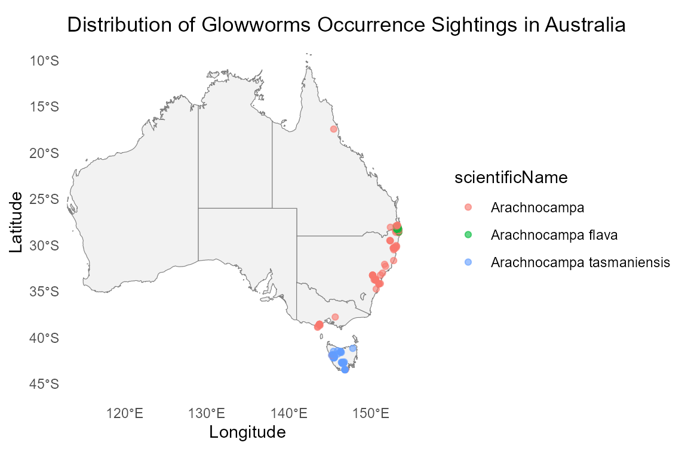
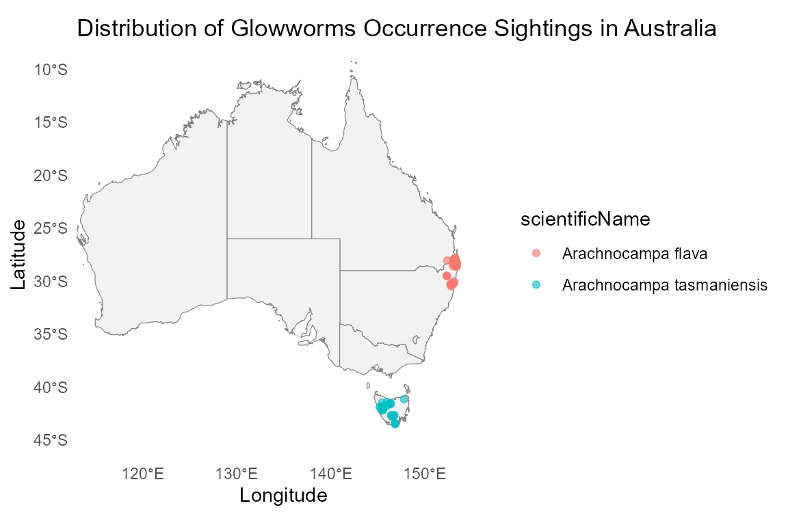

We are investigating occurrence data of Glowworms in Australia from the Atlas of Living Australia, and make a map showing the spatial locations of sightings from 2014 to 2024.
This is the head of data set:
#> # A tibble: 3 × 10
#> obs_lat obs_lon year month day weekday dayofyear datetime
#> <dbl> <dbl> <dbl> <dbl> <dbl> <ord> <dbl> <dttm>
#> 1 -43.5 147. 2016 11 29 Tuesday 334 2016-11-29 15:58:25
#> 2 -43.5 147. 2021 12 14 Tuesday 348 2021-12-14 22:14:23
#> 3 -43.5 147. 2015 12 9 Wednesday 343 2015-12-09 15:00:24
#> # ℹ 2 more variables: scientificName <chr>, obs_state <chr>Now we want to know the number of occurrence in each state:
#> # A tibble: 10 × 7
#> scientificName `New South Wales` Queensland Tasmania Victoria `NA` Total
#> <chr> <int> <int> <int> <int> <int> <dbl>
#> 1 Arachnocampa 45 15 2 11 2 75
#> 2 Arachnocampa buff… 0 0 0 1 0 1
#> 3 Arachnocampa flava 4 47 0 0 0 51
#> 4 Arachnocampa gipp… 0 0 0 1 0 1
#> 5 Arachnocampa girr… 4 0 0 0 0 4
#> 6 Arachnocampa otwa… 0 0 0 72 0 72
#> 7 Arachnocampa rich… 44 0 0 0 0 44
#> 8 Arachnocampa tasm… 0 0 40 0 0 40
#> 9 Arachnocampa trop… 0 5 0 0 0 5
#> 10 Total 97 67 42 85 2 293This is the selected species and in the next we will consider all
Arachnocampa around Arachnocampa flava as a
falava because Arachnocampa is a genus
species.

we want to assign genus “Arachnocampa” records to the “Arachnocampa flava” specie — based on how close they are geographically to other records.

#> # A tibble: 3 × 5
#> scientificName `New South Wales` Queensland Tasmania Total
#> <chr> <int> <int> <int> <dbl>
#> 1 Arachnocampa flava 23 61 0 84
#> 2 Arachnocampa tasmaniensis 0 0 40 40
#> 3 Total 23 61 40 124Nearest Weather Station Mapping
#> Nearest weather stations attached and saved as: glowworms_ws.rda#> # A tibble: 2 × 17
#> obs_lat obs_lon year month day weekday dayofyear datetime
#> <dbl> <dbl> <dbl> <dbl> <dbl> <ord> <dbl> <dttm>
#> 1 -43.5 147. 2021 12 14 Tuesday 348 2021-12-14 22:14:23
#> 2 -43.5 147. 2015 12 9 Wednesday 343 2015-12-09 15:00:24
#> # ℹ 9 more variables: scientificName <chr>, obs_state <chr>,
#> # weather_station_id <chr>, stname <chr>, stn_lat <dbl>, stn_lon <dbl>,
#> # address <chr>, stn_city <chr>, stn_state <chr>#> State Observed WeatherStation
#> 2 Queensland 61 17
#> 3 Tasmania 40 40
#> 1 New South Wales 23 67Interpretation:
Queensland:
61 of your organism records were observed in Queensland.
However, only 17 of those were linked to weather stations also located in Queensland.Tasmania:
40 observations were made in Tasmania, and
All 40 were matched to Tasmanian weather stations — a perfect match.New South Wales:
23 observations occurred there,
But 67 records were linked to weather stations in New South Wales — suggesting many observations from other states were matched to NSW stations.
📦 Datasets Overview
The occurrence and weather station data have been processed and
organized into the following structured datasets, all stored in the
data/ directory:
glowworms.rda
Contains raw occurrence records for the target organism across various regions, including key spatial and temporal fields such as latitude, longitude, observation date/time, and administrative boundaries (e.g., state or territory).
glowworms_ws.rda
An enhanced version of the occurrence dataset in which each record has been spatially matched to its nearest weather station. This dataset includes additional metadata fields:
- weather_station_id : ID of the nearest weather station
- stname : Weather station name
- stn_lat, stn_lon : Coordinates of the weather station
- stn_state, stn_city : Location details of the station